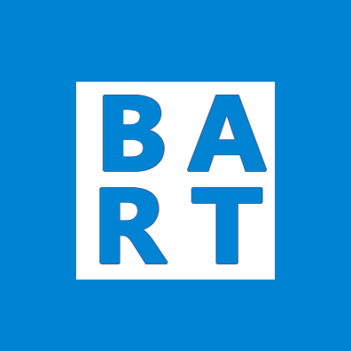

Apps

nexMuni
nexMuni is the easiest way to see SF Muni real time departures and nearby stops on Windows Phone. It finds the stops nearest you and shows both outbound and inbound times for all routes at a stop. For Windows Phone 8.1

nexBart (Work in progress)
Use nexBart to see upcoming departure times for each line and plan a route to your destination. For Windows Phone 8.1
Who
Jimmy Garrido
Developer
Born and raised in California, Jimmy is currently attending San Francisco State University for a B.S in Computer Science. His skills include C#, Java, and C++ and he has developed apps for Windows Phone and Android.
jimmy@nexdev.cojimmygarrido.co